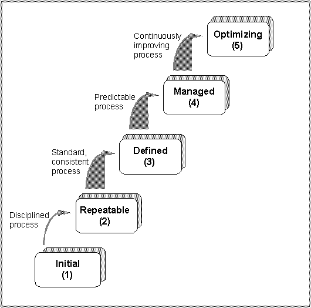
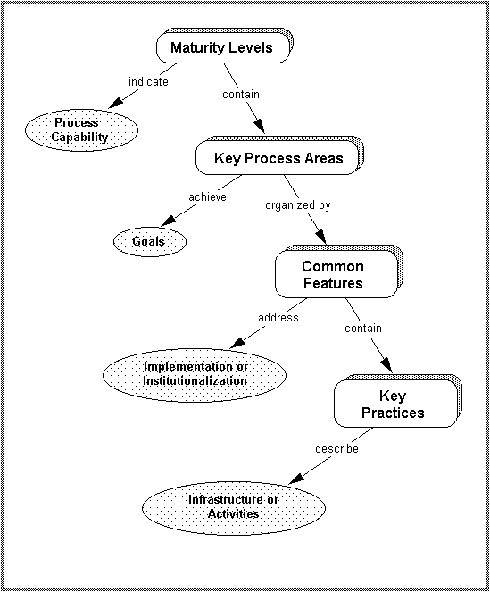
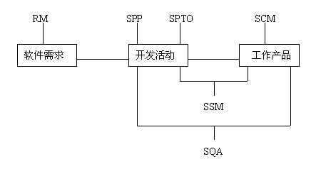

|
CMM（性能成熟度模型） 引言 ISO9001质量体系认证更着重于产品的生产即硬件部分，没有专门的针对软件开发和维护过程质量控制的方法、工具和流程，难以满足软件开发、生产和维护过程的特殊要求。因此，需要寻找一种方法或手段系统、有效地保障软件质量。 自70年代软件危机以来，学术界、企业界在软件工程过程、技术和工具方面投入了大量的人力、物力和财力，希望找到提高软件质量的有效方法。当前，一个不同与以往的概念逐渐被业界接受：保障软件质量的根本途径就是提升企业的软件生产能力。企业软件生产能力取决于企业的软件过程能力，特别是在软件开发和生产中的成熟度。企业的软件过程能力越是成熟，它的软件生产能力就越有保证；实际上技术或工具并不是最重要的。 由美国国防部资助，卡内基-梅隆大学软件工程研究所最先提出并取得研究成果的CMM模型理论及其应用，是从80年代中期开始的，90年代正式发表了研究成果。目前，这一成果已经得到了众多国家软件产业界的认可，并且在北美、欧洲和日本等国家及地区得到了广泛应用，成为了事实上的软件过程改进的工业标准。 CMM简介 CMM是一个模型，用来描述企业或者团体在某些条件下软件工程过程和实践如何实施、优化：
CMM虽然也是一个抽象的模型，但它是以具体实践为基础。CMM是一个软件工程实践的纲要，以逐步演进的架构形式不断地完善软件开发和维护过程。CMM具备变革的内在原动力，与静态的质量管理系统标准，例如 ISO 9001 (International Oragnization for Standardization,1987)形成鲜明对比。ISO9001在提供一个良好的体系结构与实施基础方面是很有效的；而CMM是一个演进的、有动态尺度的标准以驱使着一个组织在当前的软件实践中不断地改进完善。基于CMM模型的软件成熟度实践要求尽量采用更加规范的开发标准和方法，使用更加科学和精确的度量方法，选择便于管理和使用的开发工具。所有这些，都造成了整个工程的可重构性、可分解性和最优化，从而进一步明确了整个项目中必要和不必要的工作，明确了整个项目的风险，以及各个阶段进行评估的指标与应急措施。 在CMM模型及其实践中，企业的软件过程能力被作为一项关键因素予以考虑。所谓软件过程能力，是指把企业从事软件开发和生产的过程本身透明化、规范化和运行的强制化。所设定的过程可能有缺陷，但问题会在执行的过程中反映出来；企业在该过程执行一段时间后，可根据反映的问题来改善这个过程。周而复始，这个过程逐渐完善、成熟。这样一来，项目的执行不再是一个黑箱，企业清楚地知道项目是按照规定的过程进行。软件开发及生产过程中成功或失败的经验教训也就能够成为今后可以借鉴和吸取的营养，大大加快软件生产的成熟程度提高。 那么，这是否意味着随意建立一个过程都能逐渐成熟起来呢？从理论上讲，若有足够的时间应该是可以的。但在实际上却是不现实的，任何企业都不会容忍长期缓慢的过程改善。为了加快企业软件生产成熟度的提高，必须尽量利用已有的软件工程成果。在软件开发过程中，根据几十年软件工程的发展，一些关键的过程域（KPA）可以被识别出来，成为CMM模型方法中的衡量基准。侧重这些关键过程域（KPA）的实施，将会有效地建立一个过程，提升企业的软件过程能力。CMM提供了一个软件过程改善的框架，这个框架与软件生存周期无关，也与所采用的开发技术无关，根据这个框架开发企业内部具体的软件过程，可以极大程度地提高按计划的时间和成本提交有质量保证的软件产品的能力。 CMM体系结构 CMM为企业的软件过程能力提供了一个阶梯式的进化框架，阶梯共有五级。第一级只是一个起点，任何准备按CMM体系进化的企业都自然处于这个起点上，并通过它向第二级迈进。除第一级外，每一级都设定了一组目标，如果达到了这组目标，则表明达到了这个成熟级别，可以向下一级别迈进。CMM体系不主张跨越级别的进化，因为每一个低的级别实现均是高的级别实现的基础。CMM的级别示意如下图所示： 
初始级的软件过程是未加定义的随意过程，项目的执行是随意甚至是混乱的。也许，有些企业制定了一些软件工程规范，但若这些规范未能覆盖基本的关键过程要求，且执行没有政策、资源等方面的保证时，那么它仍然被视为初始级。 根据多年的经验和教训，人们总结出软件开发的首要问题不是技术问题而是管理问题。因此，第二级的焦点集中在软件管理过程上。一个可管理的过程则是一个可重复的过程，可重复的过程才能逐渐改进和成熟。可重复级的管理过程包括了需求管理、项目管理、质量管理、配置管理和子合同管理五个方面；其中项目管理过程又分为计划过程和跟踪与监控过程。通过实施这些过程，从管理角度可以看到一个按计划执行的且阶段可控的软件开发过程。 在可重复级定义了管理的基本过程，而没有定义执行的步骤标准。在第三级则要求制定企业范围的工程化标准，并将这些标准集成到企业软件开发标准过程中去。所有开发的项目需根据这个标准过程，裁剪出与项目适宜的过程，并且按照过程执行。过程的裁剪不是随意的，在使用前必须经过企业有关人员的批准。 第四级的管理是量化的管理。所有过程需建立相应的度量方式，所有产品的质量（包括工作产品和提交给用户的最终产品）需要有明确的度量指标。这些度量应是详尽的，且可用于理解和控制软件过程和产品。量化控制将使软件开发真正成为一种工业生产活动。 优化级的目标是达到一个持续改善的境界。所谓持续改善是指可以根据过程执行的反馈信息来改善下一步的执行过程，即优化执行步骤。如果企业达到了第五级，就表明该企业能够根据实际的项目性质、技术等因素，不断调整软件生产过程以求达到最佳。 除了初始级别以外，CMM的每个成熟级别的实现都定义成可操作的，每一级包含了实现这一级目标的若干关键过程域（KPA），共有18个关键过程域（KPA）分布于2、3、4、5级当中，如下表所示：
每个KPA都是由关键实施活动（KP）所组成，它们的执行表明KPA在一个组织内部得到实现。所有KPA的关键实施活动都统一按五个公共属性进行组织，在CMM中称之为共同特征（Common Features）。共同特征的分类名称是：承诺实施（Commitment to perform），实施能力（Ability to perform），执行活动（Activities performed），度量分析（Measurement and analysis）和实施验证（Verifying implementation）。下图是KPA的体系结构： 
每一个KPA都确定了一组目标，若这组目标在每一个项目都能实现，则说明企业满足了该KPA的要求。若满足了一个级别的所有KPA要求，则表明达到了这个级别所要求的能力。 承诺实施是企业为了建立和实施相应的KPA所必须采取的活动，这些活动主要包括制定企业范围的政策和高层管理的责任。 实施能力是企业实施KPA的前提条件。企业必须采取措施，在满足了这些条件后，才有可能执行KPA的执行活动。实施能力一般包括资源保证、人员培训等内容。 执行活动描述了执行KPA所需求的必要角色和步骤。在五个公共属性中，执行活动是唯一与项目执行相关的属性，其余则涉及CMM能力基础设施的建立。执行活动一般包括计划、执行的任务、任务执行的跟踪等。 度量分析描述了过程的度量和度量分析要求。典型的度量分析的要求是确定执行活动的状态和执行活动的有效性。 实施验证是验证执行活动是否与所建立的过程一致。实施验证涉及到管理方面的评审和审计以及质量保证活动。 CMM实施 在实施CMM时，可以根据企业软件过程存在问题的实际情况确定实现KPA的次序，然后按照所确定次序逐步建立、实施相应过程。在执行某一个KPA时，对其目标组也可以采取逐步满足的方式。过程改进和逐步走向成熟就是CMM体系的宗旨。 从公司目前产品开发的时间情况来看，最为缺乏的是对项目开发进行有效地管理，项目开发管理过程的改进是我们目前的首要目标。因此，公司产品开发过程改进的目标是建立一个面向管理的开发过程，通过实现CMM第二级的KPA，使得产品开发过程按计划执行且阶段可控。以下是关于CMM第二级KPA的简要描述。 CMM的第一个进行的过程改进目标（可重复级）就是通过建立关键的管理过程域，使得软件开发过程可控且可重复。在软件开发过程中，有三个基本的管理对象：软件需求、开发活动和产品（包括工作产品和提交给用户的最终产品）。可重复级的KPA正是针对上述三个对象的管理，管理关系如下图所示： 
任何一个产品都应满足用户相应的需求。但是满足用户需求的同时会存在两个问题：一是需求在开发过程中会发生变化，如何控制与管理这些变化？二是从需求到产品要经过许多步骤，如系统设计、详细设计、具体实现等，如何保证这些步骤没有背离产品的需求？ 需求管理关键过程域就是针对这两个问题提出相应的目标。软件需求可能是系统需求的一部分或是全部（纯粹的软件产品），无论是哪种情况，需求管理的第一个目标就是软件需求应能被控制，并可产生一个可用于软件工程过程和管理过程的基线。需求管理的第二个目标是确保软件项目计划、开发活动、产品与需求一致。需求管理的最终目的是在用户与实现用户需求的项目之间达成共识，需求管理活动就是为了建立并维护这种共识。 软件项目计划常常不能按期完成，主要原因有两个方面：一是由于计划执行和管理的能力不足；二是计划本身是否合理和有效，计划的不合理性和无效性造成了大多数项目拖延，甚至失败。项目的跟踪与监督则是如何保证计划的执行和调整。 建立合理的开发计划的基础是对项目规模、资源要求和风险等要有一个合理的估算。这个估算过程应是规范的，而不是任意的。例如，如果提出一个项目计划需要40个软件工程师、20个硬件工程师工作三个月的计划，那么就要问这些数据是如何得出的。用户提出的时间和费用的要求仅能作为项目计划的约束条件，而不能作为项目计划的基础。开发计划要包括所有项目活动和所有参加方面的责任，这些活动和责任需要文档化，以保证有效地将计划传达给项目的各个参加方。在项目开发计划执行前，各个项目参加方要认同所承担的项目责任，这种认同是项目计划有效性的一个基本保证。 软件工程项目是否成功的主要因素在于项目管理，而项目是否能有效地进行管理的关键在于项目过程的可见性。由于软件项目过程是一个逻辑活动过程的组合，因此，它不具备一个物理过程那样的可见性。软件项目跟踪与监控的目的就是为项目实际过程提供充分的可见性，以保证当项目执行偏离项目计划时能采取有效的解决措施。 项目跟踪是基于计划的，对一个项目要设定适当的检查点。在检查点上要将执行结果、执行状态和项目开发计划进行比较。若发现较大的差异，则采取适当的步骤进行调整。在必要的情况下，也需要对项目计划本身进行修改和调整。若在修改计划是，改变了某些项目责任，那么这些改变必须得到有关责任方面的重新认同。 由于CMM是美国国防部投资研究的项目，而美国军方有大量的子合同转包，因此子合同管理也成为了一个基本的KPA。子合同管理的目的就是选择合格的软件承包商，并可进行有效地管理。子承包商选择应由项目责任者负责，子承包商的选择是基于能力的，项目的责任者与子承包商对所承包的项目责任要有一致的认同，并保持不断地交流。项目责任者负责根据合同的责任跟踪子承包商的实际工作结果。 软件质量保证是项目管理提供的过程可见性的一个工具。由于用于开发软件系统或软件产品的过程是决定项目成功与否的关键因素，因此软件质量保证的工作是评审和审计软件活动与软件产品。评审和审计的依据是规定用于项目的步骤和相关标准。软件质量保证活动不能是随意的，必须经过充分的讨论和协商。相关的组织和个人要了解质量保证的活动和质量保证活动的结果。为了解决质量保证组织与开发组织对某些项目开发活动或开发出的产品的评价发生的争议和分歧，企业要定义更高层次的管理组织，负责解决这些争议和分歧。 产品从需求分析开始到最好提交产品要经历多个阶段，每个阶段的工作产品又会产生出不同的版本，如何在整个生存期内建立和维护产品的完整性是配置管理的目的。配置管理关键过程域的基本工作内容是：标识配置项、建立产品基线库、系统地控制对配置项的更改、产品配置状态报告和审核。同软件质量保证活动一样，配置管理活动必须制定计划，而不是随意的行为。相关的组织和个人要了解配置管理的活动及其结果，并且要认同在配置管理活动中所承担的责任。 |